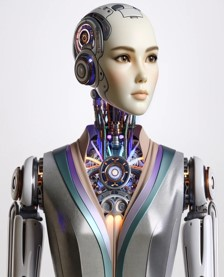
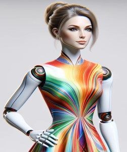
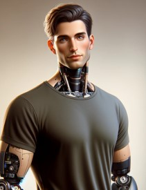
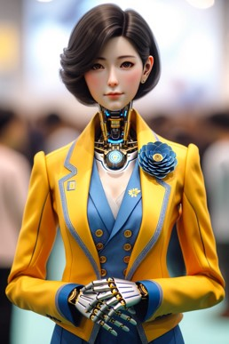

Key Popular Humanoid Robots
Sophia:
Sophia, the humanoid robot, was created by Hanson Robotics and first activated on February 14, 2016, in
Hong Kong. She represents a blend of cutting-edge technology and artistic design, making her one of the
most recognizable and advanced humanoid robots in the world.

Sophia is designed to learn and adapt to human behavior, showcasing the potential and progress in the
field of artificial intelligence and robotics. Her interactions are aimed at understanding human-machine
relations better and advancing the capabilities of AI in social contexts.
Key features of Sophia include:
• Advanced facial recognition technology.
• The ability to mimic over 50 human facial expressions.
• Proficiency in natural language processing to engage in meaningful conversations.
• Self-learning capabilities through AI algorithms.
Nadine:
Nadine, a state-of-the-art empathetic humanoid robot, is the product of a collaborative effort between
Nanyang Technological University in Singapore and the Japanese company Kokoro

in 2015. Skillfully designed to resemble her creator, Professor Nadia Thalmann, Nadine stands out with
her remarkably lifelike human expressions and mannerisms. Equipped with advanced speech recognition and
memory systems, she can engage in meaningful conversations, recall past interactions, and even display a
range of emotional responses, reflecting the intricate blend of technology and human-like attributes in
her design.
Key features of Nadine include:
• Emotional Intelligence: Nadine can perceive and respond to users' emotions.
• Conversation Skills: She engages in natural language conversations, remembering past interactions.
• Lifelike Appearance: Nadine closely resembles a human, with realistic facial expressions and
movements.
• Memory Recall: She has the ability to recognize people and recall previous conversations with
them.
Jia Jia:
Jia Jia, an exceptionally realistic humanoid robot, was developed by a team of researchers at the
University of Science and Technology of China and unveiled in 2016. Often referred to as
 the 'Robot Goddess', Jia Jia represents a significant leap in the field of humanoid robotics,
particularly in terms of aesthetic design and interaction capabilities.
Designed to resemble a traditional Chinese woman, Jia Jia demonstrates remarkable human-like expressions
and interaction capabilities. This creation marked a notable advancement in the field of humanoid
robotics, especially in terms of visual realism and interactive capabilities.
Key Features:
the 'Robot Goddess', Jia Jia represents a significant leap in the field of humanoid robotics,
particularly in terms of aesthetic design and interaction capabilities.
Designed to resemble a traditional Chinese woman, Jia Jia demonstrates remarkable human-like expressions
and interaction capabilities. This creation marked a notable advancement in the field of humanoid
robotics, especially in terms of visual realism and interactive capabilities.
Key Features:
• Realistic Human Appearance: Jia Jia closely resembles a human female, with detailed facial
features.
• Natural Language Interaction: She can hold conversations with humans in a smooth and natural way.
• Facial Expression Recognition: Jia Jia can recognize and respond to different human facial
expressions.
• Eye Movements and Lip Syncing: She exhibits realistic eye movements and lip-sync capabilities
during
conversations.
Geminoid DK:
Geminoid DK, a highly realistic humanoid robot, was developed by Professor Hiroshi Ishiguro of Osaka
University, Japan, in collaboration with Aalborg University, Denmark. Launched in

2011, it is part of the Geminoid series, robots designed to closely resemble actual humans. Geminoid DK
specifically mirrors its Danish counterpart, Associate Professor Henrik Scharfe, showcasing the advanced
capabilities in human-robot resemblance.
This humanoid robot serves as a pivotal tool in studying human-robot interaction and social robotics.
Geminoid DK's uncanny resemblance to a real human has made it a valuable asset in exploring the
psychological and societal impacts of robots in everyday life.
Key Features:
• Lifelike Appearance: Geminoid DK is designed to closely resemble a specific human individual.
• Facial Expressions: The robot can mimic a variety of human facial expressions.
• Remote Operation: It is controlled remotely, allowing for realistic human-like interactions.
• Research Tool: Geminoid DK serves as a platform for studying human-robot interaction and social
robotics.
Junco Chihira:
Junco Chihira, a remarkably lifelike humanoid robot, was developed by Toshiba and introduced in
2015.
Unveiled at the CEATEC trade show in Japan, Junco represents a significant step in

humanoid robotics, designed to mimic human appearance and behavior with astonishing accuracy.
Her
development was part of Toshiba's exploration into the potential of androids in human society,
particularly in service and hospitality roles.
Junco Chihira's introduction marked a new era in the interaction between humans and robots,
especially
in public spaces like shopping malls and tourist information centers. Her design and
functionality were
tailored to meet the needs of these environments, showcasing the practical applications of
humanoid
robots.
Key Features:
• Lifelike Appearance: Junco closely resembles a young Japanese woman, with detailed facial
features and
expressions.
• Multilingual Communication: She can communicate in multiple languages, making her ideal
for
international environments.
• Advanced Interaction: Junco is capable of interacting with people, providing information
and
assistance.
• Humanoid Role in Service: She demonstrates the potential of robots in customer service and
hospitality
sectors.